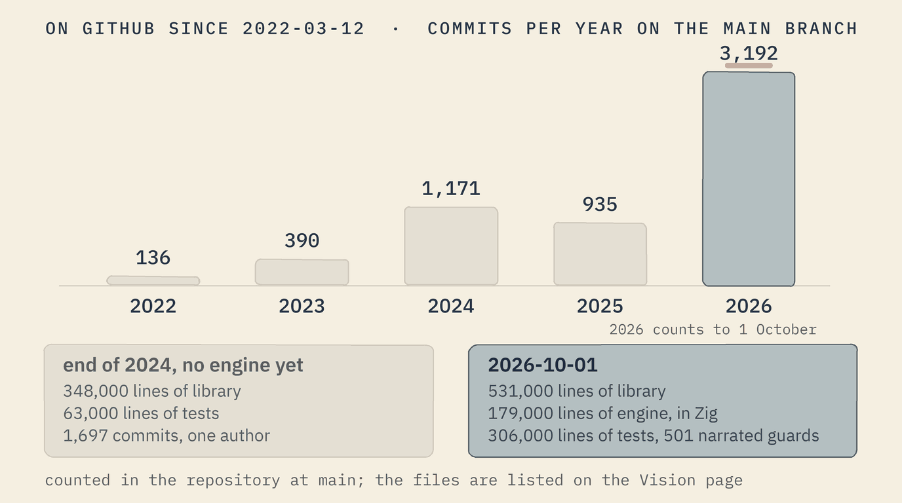
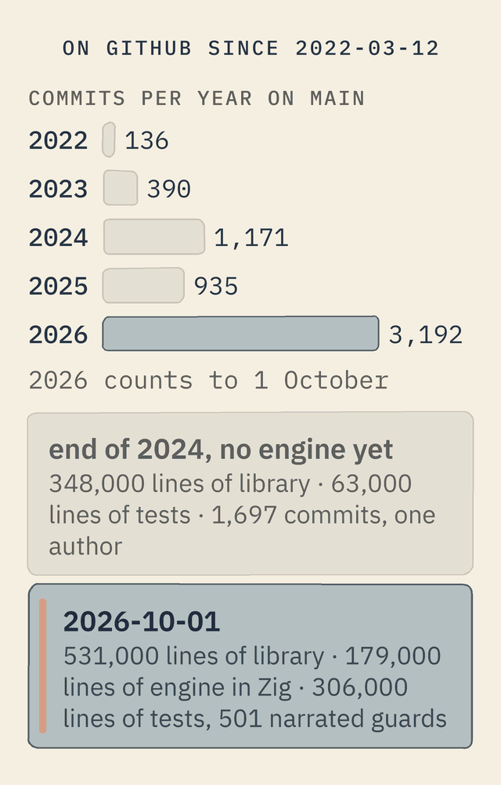

From first principles
Softanza did not start as a wrapper around existing libraries. It started from the question of what programming should feel like when the human is the parser, and it rebuilt text, numbers, lists, tables, errors and documentation from there. The mission has not moved since 2018; the repository has been public since 12 March 2022.


By the end of 2024, after 1,697 commits by one author, the library held 348 thousand lines of code and 63 thousand lines of tests, all in the host language, with no engine yet. The author states that these lines were written by hand, before coding agents. Since then the Zig engine was written (179 thousand lines), the library grew to 531 thousand lines, the tests to 306 thousand, and the pace of commits tripled: that is what building with agents under a harness looks like, when the harness is Takamba and the law is that everything is judged by running.
The counts: git rev-list --count at the last commit of each year on the main branch; lines counted over *.ring files outside archive folders, split between base/test and the rest, in the tree of a395d09c(opens in a new tab) (2024-12-31) and of 0e72e2e2c(opens in a new tab) (2026-09-30). The "written by hand" statement is the author's; the dates and sizes are the repository's.
The Softanza way A platform written from first principles can obey one set of laws everywhere. A platform assembled from a hundred libraries cannot, because each library already chose its own.